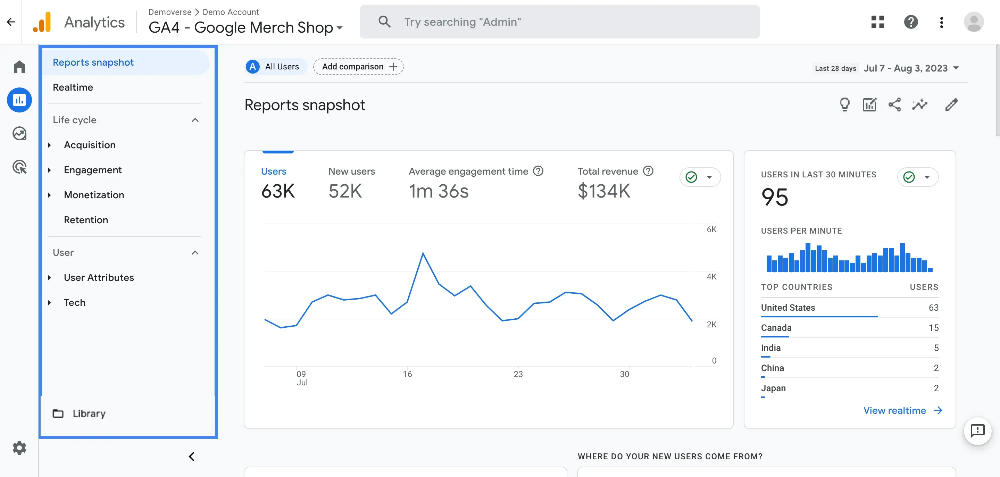

Analysen & Experten-Modelle
Vertrauensbildung durch E-E-A-T und datengesteuerte Optimierung via Google Analytics.
Das E-E-A-T Prinzip
Im Zeitalter von KI-generiertem Massen-Content ist Vertrauen zum entscheidenden Differenzierungsmerkmal geworden. Google nutzt vier Kernfaktoren zur Bewertung:
- Experience (Erfahrung): Nachweis von First-Hand-Knowledge (z. B. eigene Fallstudien, Originalfotos).
- Expertise (Fachwissen): Formale Qualifikationen und Reputation des Autors in seinem Fachgebiet.
- Authoritativeness (Autorität): Bekanntheit der Entität oder Marke in der spezifischen Nische.
- Trustworthiness (Vertrauen): Das Fundament. Sicherheit (HTTPS), Transparenz und verifizierbare Quellen.

Abb 4. Trust als Zentrum der E-E-A-T Faktoren.
Datengesteuerte Optimierung
Die Erfolgsmessung im Jahr 2026 hat sich von reinen Klickzahlen hin zur Analyse des User Intent gewandelt. Google Analytics liefert hierfür die Datenbasis:
- AI Share of Voice (AI SOV): Misst, wie oft Ihre Marke in KI-Antworten als Quelle zitiert wird.
- Conversion-Vorteil: Daten zeigen, dass Traffic über KI-Plattformen (GEO) 4,4-mal häufiger konvertiert als traditionelle Such-Anfragen.
- Dwell Time & INP: Analyse der Interaktionsqualität als Signal für inhaltliche Relevanz.

Abb 5. Performance-Analyse moderner Engagement-Metriken.